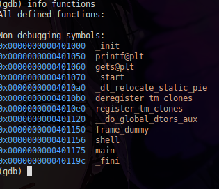

Topics
1. What is SBOF?
2. What is a stack? How does it work?
3. Important registers, how function call works
4. Practice
Pre-requisites : Fundamentals of architecture, stack, C, assembly and GDB
-------------------------
What is SBOF?
Hello, today we are going to talk about SBOF. First we need to understand what SBOF is?
SBOF (Stack Buffer Overflow) is a failure that occurs when we send data that exceeds/overflows the space that was defined for that specific data in the stack / variables with sizes already defined.
-------------------------
What is a Stack? How does it work?
Before we move on, we need to talk about how the stack works, what it is, and about important registers to facilitate our understanding of SBOF Stack is a memory area where data, local variables, and function information are stored. Located within it, we have the well-known stack-frame, which is a memory block, and it is in it that the information/data of a given function is stored. Another important point is that the stack is LIFO (Last in, first out), which would be the last to enter, and the first to leave, just like a stack of dishes for us to wash, we stack the dishes and remove them from top to bottom. Another interesting thing is that the stack grows from the highest address to the lowest address, so the highest address is the oldest data in the stack, and the lowest address is the top of the stack (recent). Now I will present a little about the registers.
-------------------------
Important Registers, how function call works
We have 3 important registers that we will need to know in order to better understand how BOF works, they are RBP, RIP and RSP, RBP that points to the base address of the beginning of the stack frame of the current function. Now, we have RIP that points to the address of the next instruction to be executed, we have RSP that points to the address of the top of the stack, these registers are 64 bits, but we have 32 bits that have the same functions known as EBP, EIP and ESP Anyway, after knowing this, I will make one thing clear, when a function is called, the RIP that currently points to the next instruction address after the 'call' instruction is stacked on the stack, but why is it stacked? So that when the 'ret' instruction is called, it knows which address to return to. We have the RBP, which is also stacked, because when the calling function returns, the data in its stack frame is restored, as well as the data that was defined/declared, etc.
-------------------------
Practice
Now that we understand how the stack works, we can get an idea of what we can do by exploiting the SBOF. We can change data in the stack by overflowing data and change the RIP stacked address and change the program flow. Now let's get to work!
Well, here we have a code written in C that uses the gets function, which is a function vulnerable to SBOF. since when we insert data into it, it doesn't even want to know if this data is more than what is defined in the variable, it allows this to happen, not only it, but other functions such as scanf, strcpy, and others that do not ask for any argument to 'limit the size of the characters'
We see the code above, where we declare a variable that can hold up to 64 bytes, and we use get to get the user input and store it in the variable. Finally, now we have to compile, but we have to compile the binary without the protections that prevent our attack from being executed successfully. Of course, there is a way to bypass these protections, but at the time you are learning, this is not the case. We have 2 protections, excluding NX PIE - This is a protection that, when activated, if we execute the binary, it loads it in different/random addresses Stack Protector - This is a protection that, in short, is a value that is stored in the stack, and it is always checked to see if it has been changed. If it has been changed, the program stops, informing that a stack overflow has occurred. so after we know about the protections, we will compile with GCC: gcc -o bof bof.c -fno-stack-protector -no-pie -fno-stack-protector - Disable Stack Protector -no-pie - Disable PIE After that, we will open it with GDB. We will disassemble it and choose an address where we want to add our breakpoint So, what's going on here? Let's start to understand better. Starting in the 2nd instruction, I'm stacking the RBP that currently points to the base address of the calling function's stack to retrieve it later, and then in the 3rd instruction, I'm copying the value of RSP to RBP. Thus creating the stack frame of the current function, that is now the RBP points to the base address of the current function's stack. Right after in the 4th instruction, we're subtracting it, knowing that the stack grows from top to bottom, it's allocating space in the stack to be used Finally, in the 5th instruction, I am calculating the specific address, this rbp-0x40 is nothing more, nothing less, than the top of the stack and where the data inserted by me was stored. Right after I'm copying the data to the RDI (register), which anyone who has studied calling conventions will remember from fastcall, and right after I'm copying the 0 which would be the fd stdin to the EAX register and I'm calling gets, which will be responsible for getting the data that I inserted. and then the ret occurs, and so on, anyway, after we understand what is happening in the code, which would not be necessary since we have the source code, but it is good for training '-' Afterwards, we will use a pattern generator, which would be a kind of A-Brujin sequence. To save time, I will leave a website below that explains what an Brujin sequence is : Wikipedia So, we will use a website that does this for people, but there are several places, codes that do this for people, we will need this to find out the offset needed to get to the RIP, how so? Offset would be the displacement until reaching the RIP, then if any data is placed after this offset, the RIP will be changed. I don't know a good way to explain it to you. Finally, we generated a sequence of data, now let's copy it and run it in our program. Well, we ran it and as expected it gave a segmentation fault, which is when it returns to a non-existent address. Now let's view, through 'i f', the information from the registers of the stack-frame of the current function. Look, the RIP address that was stacked ended up being changed, as the generator we use uses the Brujin sequence. Which, as you probably read, does not repeat in any way, after 2 bytes, there is a number, one different from the other, in each 3 byte there is a different number. so we copied this value that was changed from the RIP, and put it there on the website to find out the offset. Look how interesting, we were able to find the offset, so now we know that from offset 72, we change the RIP value. Let's build an exploit with this using the pwntools library, which is a library that helps us explore binaries, and is great for this occasion when exploring an SBOF. Well, we have already coded an xpl (exploit), I will explain each line In 1, all the functions/modules provided by the 'pwn' lib are being imported In 2, the process function is being used to execute the 'bof' binary In 3, a variable is being defined where we define A as a byte and repeat it, 72x which is the offset number. In 4 p64(), this is where the address that will be changed in the RIP will be located, where after the 'ret' occurs, it will be popped and used to know where to return, but in this case, since we are going to change it, it will change the normal flow of the program hihihi In 5, I am concatenating the pattern and the address In 6, I am sending the data and in 7, 8 I am storing the received data in the variable and printing it right after Okay, now let's go back to GDB to list the available functions it has, and who knows, maybe there's a function that wasn't called by the code.  Look, we have a function called 'shell', which is probably the function we need to change to get the flag, let's copy its address and insert there in the 4th instruction Well, after that, it looks like this, let's now run the script to see what it will return to us! Look, how cool! We managed to change the program's execution flow, and make it execute a function that it wasn't supposed to execute! Anyway, this was my paper, I hope you, dear reader, enjoyed it, below I would like to thank these people who helped me a lot! 0xTen, Xenia, Nadara and Lucas Souza Happy exploring!